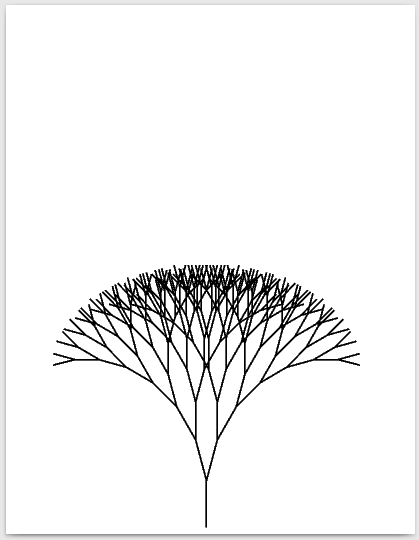

Restantes:
303
Usuário:
Notas:
Q1: 100
Q2: 100
Q3: 100
Q4: 100
Q5: 90
Q6: 90
Q7: 72.9
Q8: 100
Q9: 100
Q10: 90
Q11: 100
Q12: 100
Q13: 100
Q14: 100
Q15: 81
IALG Turmas 10/14 Lista de Arquivos
Prova Aberta Até: 27/03/2017 16:00:00
Número Máximo de Tentativas: 6
Atenuação da Nota por Tentativa (multiplicativa): 0.9
Nota Máxima por Tentativa:
- 100
- 90
- 81
- 72.9
- 65.61
- 59.049
Descrição:
QUESTÕES
Questão 1: Arquivos - Escrita Básica em Arquivos
Faça um programa que leia da entrada padrão (cin)
o nome de um arquivo e uma string qualquer. Esse programa deve abrir
este arquivo de texto no modo de escrita (criado se não existia,
esvaziado se já existia). Em seguida, você deve escrever a string no
arquivo.
As entradas devem ser lidas por meio do operador de leitura (>>) e não por meio da função getline.
-
Entradas:
- Nome do arquivo de texto que será escrito.
- String que será escrita no arquivo.
-
Saída:
- Arquivo de texto contendo a string recebida como entrada.
Exemplos de Entradas e Saídas
Entradas:
arquivo_de_texto.txt AlgumConteudoParaOArquivo
Conteúdo do Arquivo de Saídas (arquivo_de_texto.txt):
AlgumConteudoParaOArquivo
Peso: 1
Última tentativa: 15/02/2017 13:40:58
Tentativas: 1 de 6
Nota (0 a 100): 100
Status ou Justificativa de Nota: Nenhum erro encontrado.
Tentativas de Resposta:
Questão 2: Arquivos - Leitura Básica de Arquivos
Faça um programa que recebe como entrada o nome de um arquivo de texto. Esse programa deve abrir este arquivo de texto no modo de leitura. Em seguida, você deve ler uma string deste arquivo e imprimir essa string na saída padrão (cout).
Para ler o nome do arquivo e o conteúdo do arquivo, você deve usar o operador de leitura (>>) e não a função getline.
-
Entrada:
- Nome do arquivo de texto que será lido.
-
Saída:
- String contida dentro do arquivo de texto.
Exemplos de Entradas e Saídas
Entradas:
arquivo_de_texto.txt
Saídas:
HelloWorld!!!
Peso: 1
Última tentativa: 15/02/2017 13:50:25
Tentativas: 1 de 6
Nota (0 a 100): 100
Status ou Justificativa de Nota: Nenhum erro encontrado.
Tentativas de Resposta:
Questão 3: Arquivos - Intercalar elementos
Faça um programa que abre dois arquivos, arquivoA.txt e arquivoB.txt, um contendo N palavras e outro M palavras (assuma que N e M não serão maiores que 100). Denote as palavras do arquivo arquivoA.txt, na sequência em que aparecem no arquivo, por a1, a2, ..., aN. Denote as palavras do arquivo arquivoB.txt, na sequência em que aparecem no arquivo, por b1, b2, ..., bM. Seu programa deverá escrever um terceiro arquivo, arquivoC.txt, contendo as palavras de arquivoA.txt e arquivoB.txt, na seguinte ordem:
Entradas (arquivoA.txt)
- Sequência de N palavras: a1 a2 ... aN
Entradas (arquivoB.txt)
- Sequência de N palavras: b1 b2 ... bM
Saídas (arquivoC.txt)
- Sequência de N+M palavras: a1 b1 a2 b2 ... ak bk ... aN bM
Exemplo de entrada (arquivoA.txt)
Copo Cadeira Janela Cavalo
Exemplo de entrada (arquivoB.txt)
Cachorro Café Borracha Sapato
Exemplo de saída (arquivoC.txt)
Copo Cachorro Cadeira Café Janela Borracha Cavalo Sapato
Obs: Se um arquivo acabar primeiro, somente as palavras do outro serão adicionadas a partir deste momento.
Peso: 1
Última tentativa: 15/02/2017 16:07:15
Tentativas: 1 de 6
Nota (0 a 100): 100
Status ou Justificativa de Nota: Nenhum erro encontrado.
Tentativas de Resposta:
Questão 4: Arquivo - Alunos para Prova de Recuperação (Ordenação)
Ao término do semestre, o professor de uma disciplina calcula a nota de cada aluno e verifica quais alunos precisarão fazer a prova de recuperação.
Leia de um arquivo "alunos.txt" o número de matrícula dos alunos e as respectivas notas na matéria. Calcule a nota final de todos os alunos. Salve em um arquivo "recupera.txt" o número de matrícula dos alunos que precisarão da prova de recuperação, ordenado da maior nota para menor. A disciplina possui quatro avaliações, todas com o mesmo peso. A média necessária para aprovação é 60.
Se você ainda não aprendeu ordenação, a inserção em ordem pode ser usada para resolver este problema.
Entradas:
- Arquivo alunos.txt com dados no formato
numero_de_alunos matricula nota1 nota2 nota3 nota4 matricula nota1 nota2 nota3 nota4 ... matricula nota1 nota2 nota3 nota4
Saída:
- Arquivo recupera.txt com as matrículas dos alunos que precisarão fazer a prova substitutiva, da maior para menor nota. Caso não tenha aluno nessa situação, deve-se imprimir -1 no arquivo.
Exemplos de Entradas e Saídas:
Entradas:
6 201220892 87.5 100 100 90 201315502 0 50 30 50 201312204 15 50 30 0 201220822 100 97.5 100 95 201220155 33 12 50 100 201120823 50 30 0 0
Saídas:
201220155 201315502 201312204 201120823
Peso: 1
Última tentativa: 15/02/2017 19:17:45
Tentativas: 1 de 6
Nota (0 a 100): 100
Status ou Justificativa de Nota: Nenhum erro encontrado.
Tentativas de Resposta:
Questão 5: Arquivos - Número áureo (recursividade)
O número áureo, frequentemente denotado pela letra grega φ (phi) é um número real irracional que ocorre espontaneamente na natureza e é frequentemente usado nas artes por estar relacionado à nossa percepção de beleza.
O número áureo pode ser calculado pela recorrência φ = 1 + 1/φ.
Por ser uma recorrência infinita, ela precisa ser limitada para ser usada na recursividade da Computação. Podemos definir o valor aproximado de φ em função do número de termos usados no cálculo, assim:
Faça um programa que tem uma função que calcula uma aproximação do número áureo, usando recursão. A função deve retornar o valor aproximado de φ. Não é permitido o uso de variáveis "globais", ou melhor, variáveis definidas fora de alguma função.
O número áureo, deve ser do tipo ponto flutuante de precisão dupla (double) para possibilitar a precisão necessária nos cálculos.
Para facilitar a análise da convergência da função, você deve colocar
nela uma operação de escrita, de tal forma que os valores
intermediários ficarão escritos num arquivo cujo nome é "phi.txt".
Assim, a resposta final fica será escrita sozinha na saída padrão,
facilmente identificável, mas os valores intermediários podem ser
consultados no arquivo.
Entradas:
- O número de termos para o cálculo da aproximação do número áureo.
Saídas:
- O valor aproximado do número áureo (na saída padrão).
- Cada valor intermediário (inclusive o último) do cálculo (no arquivo "
phi.txt").
Exemplo de Entrada:
3
Exemplo de Saída (saída padrão):
1.5
Exemplo de Saída (arquivo "phi.txt"):
1 2 1.5
Peso: 1
Última tentativa: 16/02/2017 00:48:21
Tentativas: 2 de 6
Nota (0 a 100): 90
Status ou Justificativa de Nota: Nenhum erro encontrado.
Tentativas de Resposta:
Questão 6: Arquivo - Cópia de arquivo.
Faça um programa que lê um arquivo texto e produz outro arquivo, com o mesmo conteúdo do primeiro, exceto pelos caracteres brancos que devem ser eliminados. Os nomes dos arquivos de entrada e saída devem ser lidos pelo programa. Não é permitido ler o arquivo de entrada todo para a memória antes de escrever o arquivo de saída.
Entradas:
- Nome do arquivo de entrada (sequência de caracteres).
- Nome do arquivo de saída (sequência de caracteres).
Saídas:
- Criar uma cópia do arquivo.
Exemplo de entrada (entrada padrão):
Entrada.txt Saida.txt
Exemplo de entrada (arquivo Entrada.txt):
Espero que o dredd te de 100
Exemplo de saída (arquivo Saida.txt):
Esperoqueodreddtede100
Peso: 1
Última tentativa: 16/02/2017 00:56:26
Tentativas: 2 de 6
Nota (0 a 100): 90
Status ou Justificativa de Nota: Nenhum erro encontrado.
Tentativas de Resposta:
Questão 7: Arquivo - Até o número primo
Faça um programa que leia números inteiros de um arquivo, cujo nome será fornecido pelo usuário até encontrar um número primo. Depois do primo existirá mais uma string que deverá ser o nome do arquivo onde será escrito os dois menores (menor seguido do segundo menor) e a soma dos outros (todos os números, exceto os dois menores).
Exemplo de entrada:
entrada.txt
Conteúdo do arquivo entrada.txt:
4 6 8 9 10 12 11 saida.txt
Exemplo de saída (no arquivo saida.txt):
4 6 50
Peso: 1
Última tentativa: 21/02/2017 22:46:07
Tentativas: 4 de 6
Nota (0 a 100): 72.9
Status ou Justificativa de Nota: Nenhum erro encontrado.
Tentativas de Resposta:
Questão 8: Arquivo - As Grandes Casas de Westeros
No mundo criado nas Crônicas de Gelo e Fogo o continente de Westeros é dividido em sete reinos e, cada reino, é governado por uma Grande Casa (uma família nobre) a partir de sua cidade sede. Essas famílias possuem sobrenomes famosos e seus brasões contêm símbolos conhecidos por todo o povo (geralmente um animal ou outra coisa relacionada à natureza). A Casa Stark, por exemplo, tem sua sede em Winterfell e seu brasão possui como símbolo um Lobo gigante.
Como fã dos livros você resolveu fazer um programa que, usando um arquivo com as informações das famílias nobres de Westeros, permite que um usuário digite o nome de uma das Grandes Casas de Westeros e uma opção ('c' ou 'b') e o programa então exibe a cidade sede ou o símbolo do brasão da família. Seu programa precisa ter um subprograma que receba as informações das casas, o nome da casa digitada pelo usuário e a opção que ele escolheu e retorne a resposta esperada pelo programa.
Obs1: considere que não existem espaços, nem acentos, nos nomes das casas, cidades e símbolos dos brasões. Considere ainda que não existem mais que 100 Grandes Casas em Westeros.
Obs2: todas as operações de leitura e escrita, tanto de arquivos quanto da entrada/saída padrão, devem ser feitas no subprograma principal.
Entrada (arquivo "casas.txt"):
- Cada linha tem nessa ordem: nome da Casa, cidade sede e símbolo do brasão.
Entrada (ATENÇÃO: da entrada padrão):
- Um nome de uma Casa de Westeros.
- Um caractere representado a escolha do usuário ('c' para cidade sede e 'b' para símbolo do brasão).
Saídas (ATENÇÃO: na saída padrão):
- A cidade sede (se a opção for 'c') ou o símbolo do brasão (se a opção for 'b') da Casa digitada pelo usuário.
Exemplo de Entrada (arquivo "casas.txt"):
Stark Winterfell Lobo Targaryen PedraDoDragao Dragao Lannister RochedoCasterly Leao Greyjoy Pyke Lula
Exemplo de entrada (ATENÇÃO: da entrada padrão):
Greyjoy c
Exemplo de Saída: (ATENÇÃO: na saída padrão)
Pyke
Peso: 1
Última tentativa: 18/02/2017 01:11:13
Tentativas: 1 de 6
Nota (0 a 100): 100
Status ou Justificativa de Nota: Nenhum erro encontrado.
Tentativas de Resposta:
Questão 9: Arquivo - Tropas na Fortaleza Vermelha
Porto Real é a capital e a maior cidade dos Sete Reinos, localizada na costa leste de Westeros, lugar no qual se localiza a Fortaleza Vermelha, onde está o Trono de Ferro. A Mão do Rei é o principal conselheiro do Rei e executor de seus comandos nos Sete Reinos.
Sabendo que Westeros está em guerra e que a Mão do Rei precisa alocar suas tropas ao redor da Fortaleza Vermelha. Faça um programa que leia de um arquivo texto chamado tropas.txt dois caracteres distintos. O primeiro caractere representa o símbolo das tropas de Westeros e o segundo caractere representa o símbolo das tropas inimigas. Seu programa deverá gerar uma matriz de tamanho 10x10 cujos elementos serão do tipo caractere. A matriz representa um mapeamento das áreas ao redor da Fortaleza Vermelha e deve ser preenchida com os símbolos das tropas de Westeros e das tropas inimigas. A seguir, para o preenchimento da matriz, seu programa deverá ler do arquivo tropas.txt um número inteiro indicando a quantidade de tropas de Westeros a serem alocadas na matriz e uma sequência de coordenadas x e y indicando o posicionamento destas tropas. Onde x indica uma linha e y indica uma coluna na matriz. Seu programa deverá ler do mesmo arquivo texto um novo número inteiro indicando a quantidade de tropas inimigas e uma nova sequência de pares de coordenadas x e y indicando o posicionamento destas novas tropas. Em seguida, leia do arquivo tropas.txt, um caractere para definir as coordenadas na matriz que não estejam associadas a nenhuma das tropas. Seu programa deverá exibir no dispositivo de saída padrão a matriz resultante que descreva o posicionamento das tropas ao redor da Fortaleza Vermelha.
Por fim, exiba no dispositivo de saída padrão as frentes de batalha nas quais as tropas de Westeros possuem maior potencial de vitória. As frentes de batalha são dadas pelas linhas da matriz. As tropas Westeros possuem maior potencial de vitória em uma determinada frente de batalha se a quantidade de tropas de Westeros naquela frente (ou seja, em uma determinada linha da matriz) for superior a quantidade de tropas inimigas na mesma linha. Para isso, utilize uma mensagem de saída no formato Símbolo de Westeros: f1 f2 … fn. Onde f1, f2, …, fn denotam as frentes de batalha (índices das linhas da matriz). Note que há um caractere de espaço separando as frentes de batalha.
Entradas (arquivo tropas.txt):
- Caractere simbolizando o símbolo das tropas de Westeros.
- Caractere simbolizando o símbolo das tropas inimigas.
- Inteiro indicando a quantidade de tropas de Westeros.
- Sequência de coordenadas x, y indicando o posicionamento das tropas de Westeros.
- Inteiro indicando a quantidade de tropas inimigas.
- Sequência de coordenadas x, y indicando o posicionamento das tropas inimigas.
- Caractere simbolizando posições no mapa (matriz) sem nenhuma tropa.
Saídas (dispositivo de saída padrão):
- Matriz 10x10 de caracteres simbolizando o posicionamento das tropas e as áreas livres ao redor da Fortaleza Vermelha
- Símbolo da casa de Westeros seguido do símbolo de ":" e a sequência de números inteiros que indicam as frentes de batalha (linhas) nas quais as tropas de Westeros estão em maior número
Exemplo de Entrada (arquivo tropas.txt):
W I 19 0 9 1 8 1 9 2 7 2 8 2 9 3 7 3 8 3 9 4 8 5 6 5 7 5 8 6 6 6 7 6 8 7 7 7 8 8 8 15 0 3 1 3 2 4 3 4 3 5 4 4 4 5 5 4 6 3 7 3 7 2 8 3 8 2 9 2 9 1 *
Exemplo de Saída (dispositivo de saída padrão):
* * * I * * * * * W * * * I * * * * W W * * * * I * * W W W * * * * I I * W W W * * * * I I * * W * * * * * I * W W W * * * * I * * W W W * * * I I * * * W W * * * I I * * * * W * * I I * * * * * * * W: 1 2 3 5 6
Peso: 1
Última tentativa: 18/02/2017 07:42:58
Tentativas: 1 de 6
Nota (0 a 100): 100
Status ou Justificativa de Nota: Nenhum erro encontrado.
Tentativas de Resposta:
Questão 10: Arquivos - Intercalação de dois arquivos
Faça um programa que abre dois arquivos, arquivoA.txt e arquivoB.txt, ambos contendo N palavras (assuma que N não será maior que 100). Denote as palavras do arquivo arquivoA.txt, na sequência em que aparecem no arquivo, por a1, a2, ..., aN. Denote as palavras do arquivo arquivoB.txt, na sequência em que aparecem no arquivo, por b1, b2, ..., bN. Seu programa deverá escrever um terceiro arquivo, arquivoC.txt, contendo as palavras de arquivoA.txt e arquivoB.txt, na seguinte ordem:
Entradas (arquivoA.txt)
- Sequência de N palavras: a1 a2 ... aN
Entradas (arquivoB.txt)
- Sequência de N palavras: b1 b2 ... bN
Saídas (arquivoC.txt)
- Sequência de 2N palavras: a1 bN a2 bN-1 ... ak bN-k+1 ... aN b1
Exemplo de entrada (arquivoA.txt)
Copo Cadeira Janela Cavalo
Exemplo de entrada (arquivoB.txt)
Cachorro Café Borracha Sapato
Exemplo de saída (arquivoC.txt)
Copo Sapato Cadeira Borracha Janela Café Cavalo Cachorro
Peso: 1
Última tentativa: 15/02/2017 16:22:44
Tentativas: 2 de 6
Nota (0 a 100): 90
Status ou Justificativa de Nota: Nenhum erro encontrado.
Tentativas de Resposta:
Questão 11: Arquivos (registros, funções) - Normalizar notas
Faça um programa que normaliza notas de alunos. Normalizar as notas, neste contexto, significa alterar todas as notas proporcionalmente, para que a maior nota passe a ter o maior valor possível (ex.: 100). Naturalmente deverá haver arredondamento para o valor inteiro mais próximo durante a normalização.
Os dados de entrada devem vir de um arquivo chamado notas.txt
em que cada linha tem um número de matricula seguido de uma nota. Uma
nota é um número inteiro entre 0 e 100. O arquivo deverá ter sido criado
antes da execução do programa.
As notas normalizadas devem ser escritas no mesmo arquivo, seguindo o mesmo formato, mantendo a mesma ordem que existia.
Para facilitar a alteração do arquivo, seu programa deverá ter ao menos 3 módulos:
- Um módulo para ler todos os registros de nota do arquivo,
- um módulo para normalizar todas as notas e
- um módulo para escrever todos os registros de nota de volta no arquivo.
Naturalmente, deverá existir um módulo principal que interliga os outros.
O programa deve usar registros para representar os registros de notas. Números de matrícula e notas devem ser números inteiros.
Exemplo de entrada (conteúdo do arquivo notas.txt antes da execução):
201110004 80 201210264 65 201210969 0 201210267 42
Exemplo de saída (conteúdo do arquivo notas.txt depois da execução):
201110004 100 201210264 81 201210969 0 201210267 53
Peso: 1
Última tentativa: 18/02/2017 08:47:21
Tentativas: 1 de 6
Nota (0 a 100): 100
Status ou Justificativa de Nota: Nenhum erro encontrado.
Tentativas de Resposta:
Questão 12: Arquivos - Cifra de César
A cifra de César é uma forma de criptografia antiga, onde cada letra de uma determinada mensagem é trocada pela letra que a sucede em 3 posições. Por exemplo, a palavra AJUDA seria transformada em DMXGD. Escreva uma função que leia um arquivo texto e escreva a cifra de César correspondente em um outro arquivo texto.
A letra X é trocada por A, Y por B e Z por C.
O programa deve ler um nome de arquivo da entrada padrão, e aplicar a
cifra de César em seu conteúdo, escrevendo o resultado num arquivo cujo
nome é "cifrado". Suponha que no arquivo de entrada só
existem letras maiúsculas sem qualquer tipo de acentos, além espaços e
finais de linha. Os caracteres brancos não podem ser modificados.
Entradas:
- Nome de um arquivo a ser lido (não há espaços no nome).
- Conteúdo do arquivo informado.
Saída:
- Um arquivo cujo nome é "
cifrado", contendo o resultado da aplicação da cifra ao conteúdo do arquivo da entrada.
Exemplo de entrada (conteúdo do arquivo):
GALLIA EST OMNIS DIVISA IN PARTES TRES QUARUM UNAM INCOLUNT BELGAE
Exemplo de saída (conteúdo do arquivo cujo nome é "cifrado"):
JDOOLD HVW RPQLV GLYLVD LQ SDUWHV WUHV TXDUXP XQDP LQFROXQW EHOJDH
Peso: 1
Última tentativa: 18/02/2017 09:54:31
Tentativas: 1 de 6
Nota (0 a 100): 100
Status ou Justificativa de Nota: Nenhum erro encontrado.
Tentativas de Resposta:
Questão 13: Arquivos - Desenhando árvores (recursão)
A recursão, sendo uma forma intuitiva de repetição permite descrever soluções complexas facilmente. A recursão pode ser encontrada com frequência na natureza, produzindo elementos complexos com regras de formação simples.
Uma árvore, por exemplo, pode ser tomada como um exemplo de recursão. Cada pedaço de uma árvore (um galho) tem a mesma estrutura, ou regra de formação, da árvore toda.
Você deve fazer um programa que desenha árvores, usando da recursão para facilitar o programa. Para que não seja preciso aprender a usar comandos de desenho, seu programa deverá escrever comandos um arquivo texto e então um programa de terceiros vai interpretar os comandos e fazer o desenho para você.
Seu programa deverá gerar um arquivo chamado "arvore.ps". Esse arquivo deve ter o seguinte formato:
newpath ... 2 setlinewidth stroke
Ou seja, um início fixo, um final fixo e, na parte das reticências, ficarão comandos que serão gerados recursivamente, de acordo com as entradas passadas para seu programa.
Para desenhar uma árvore recursivamente, é preciso determinar:
- Uma posição inicial (x,y);
- um tamanho (para fazer um risco a partir da posição inicial);
- um ângulo (que determina a inclinação do risco a partir da posição inicial);
- um nível (que controla a hora de terminar a recursão).
Então desenhar uma árvore, fica sendo: a) fazer um risco na direção desejada, com o tamanho desejado; b) desenhar uma arvore com tamanho menor, ângulo menor e nível menor e c) desenhar uma árvore com tamanho menor, ângulo maior e nível menor.
Para fazer um risco na direção desejada, é preciso calcular a posição final do risco. Da geometria vem que a posição final é (novoX, novoY) = (cosseno(angulo)*tamanho+x, seno(angulo)*tamanho+y). Assim, é só escrever no arquivo os comandos:
x y moveto novoX novoY lineto
A cada recursão, faça o tamanho diminuir 10% e o ângulo da árvore variar 0,26 radianos para mais e para menos (dois galhos). O tamanho inicial e o nível de recursões são entradas do problema. A primeira posição inicial deve ser (300,10).
Entradas:
- Tamanho (um número real que é o comprimento do primeiro risco).
- Número de níveis (o número de recursões a ser feito).
Saída: Um arquivo PostScript no formato acima. Mandando abrir o arquivo gerado, um visualizador de PostScript já instalado no computador vai desenhar a árvore. Uma árvore de 8 níveis será desenhada assim:
Exemplo de Entrada:
50 2
Exemplo de Saída (arquivo arvore.ps):
newpath 300 10 moveto 300 60 lineto 300 60 moveto 288.431 103.488 lineto 300 60 moveto 311.569 103.488 lineto 2 setlinewidth stroke
Peso: 1
Última tentativa: 25/02/2017 20:08:04
Tentativas: 1 de 6
Nota (0 a 100): 100
Status ou Justificativa de Nota: Nenhum erro encontrado.
Tentativas de Resposta:
Questão 14: Arquivo - Crivo de Eratóstenes
O Crivo de Eratóstenes é um algoritmo e um método simples e prático para encontrar números primos até um certo valor limite. Segundo a tradição, foi criado pelo matemático grego Eratóstenes (c. 285-194 a.C.), o terceiro bibliotecário-chefe da Biblioteca de Alexandria.
Este algoritmo consiste em pegar o primeiro elemento do intervalo [2, limite] como pivô, sendo um número primo, e excluir todos os valores que podem ser divididos pelo pivô. Feito isso troque de pivô, sendo o próximo valor da lista, sendo também um número primo.
Faça um programa que utilize este algoritmo para o cálculo de todos os números primos de um dado intervalo. O usuário entrará com o limite e os números primos devem ser salvos em um arquivo "saida.txt"
Entradas:
int limite- Valor limite do intervalo no qual os números primos serão calculados.
Saída:
- Arquivo "saida.txt", contendo os números primos do intervalo [2, limite].
Exemplos de Entradas e Saídas:
Entradas:
100
Saídas:
2 3 5 7 11 13 17 19 23 29 31 37 41 43 47 53 59 61 67 71 73 79 83 89 97
Referências:
Peso: 1
Última tentativa: 25/02/2017 22:47:30
Tentativas: 1 de 6
Nota (0 a 100): 100
Status ou Justificativa de Nota: Nenhum erro encontrado.
Tentativas de Resposta:
Questão 15: Arquivos - Caminho na Matriz em Quatro Direções
Como no exercício "Caminho na Matriz", dada uma matriz para representar posições no espaço, devemos novamente encontrar um caminho entre duas posições. Encontrar um caminho significa encontrar posições por onde é possível passar.
O progama deve ser implementado de maneira recursiva, porém desta vez será possível caminhar em quadro direções na matriz, seguindo a seguinte ordem: Direita,Baixo,Esquerda,Cima.O movimento pelo caminho pode ser descrito da seguinte forma:
Faça um programa que lê uma matriz 18x30 de caracteres representando um lugar. Nessa matriz haverá o caractere '.' (ponto) nas posições em que é possível transitar e haverá o caractere '#' (cerquilha) nas posições em que não é possível transitar (obstáculos). Encontre na matriz um caminho do canto superior esquerdo até o canto inferior direito usando a estratégia acima. O programa deve alterar a matriz, alterando todas as posições analisadas com um 'x' (xis), o que permite não apenas ver o caminho encontrado, mas também quanto processamento foi necessário para encontrá-lo.O programa também deverá marcar com "O" (letra 'O' maiúscula), o caminho correto em que foi usado para se encontrar a saída.
OBS.:Ele nunca irá percorrer o mesmo caminho, ou seja, ele nunca irá passar novamente por um espaço já marcado por 'x'.
Seu programa deverá ter uma função recursiva que encontra caminhos numa matriz e faz as marcações das posições analizadas. Planeje os parâmetros com cuidado. Não é permitido o uso de variáveis globais.
A função principal deve escrever a matriz com as posições marcadas depois do caminho ter sido encontrado.
OBS.: O programa irá receber a entrada de um arquivo de nome "entrada.txt", e irá escrever em outro arquivo de nome "saida.txt".
Exemplo de Entrada: entrada.txt
.............................# .###########################.# ...........#################.. ##########.#...............### .........#.#.................. .........#.#.................. .........#.#.................. .........#.................... ############.################# #............................# #..........################..# #..........#..............#..# #..........#.##############..# #..........#.##############..# #..........#.................# #..........################### #####......................... #####.........................
Exemplo de Saída: saida.txt
Oxxxxxxxxxxxxxxxxxxxxxxxxxxxx# O###########################x# OOOOOOOOOOO#################xx ##########O#xxxxxxxxxxxxxxx### .........#O#xxxxxxxxxxxxxxxxxx .........#O#xxxxxxxxxxxxxxxxxx .........#O#xxxxxxxxxxxxxxxxxx .........#OOOxxxxxxxxxxxxxxxxx ############O################# #.........OOOxxxxxxxxxxxxxxxx# #.........O################xx# #.........O#xxxxxxxxxxxxxx#xx# #.........O#x##############xx# #.........O#x##############xx# #.........O#xxxxxxxxxxxxxxxxx# #.........O################### #####.....OOOOOOOOOOOOOOOOOOOO #####........................O
Peso: 1
Última tentativa: 27/03/2017 10:48:05
Tentativas: 3 de 6
Nota (0 a 100): 81
Status ou Justificativa de Nota: Nenhum erro encontrado.
Tentativas de Resposta: